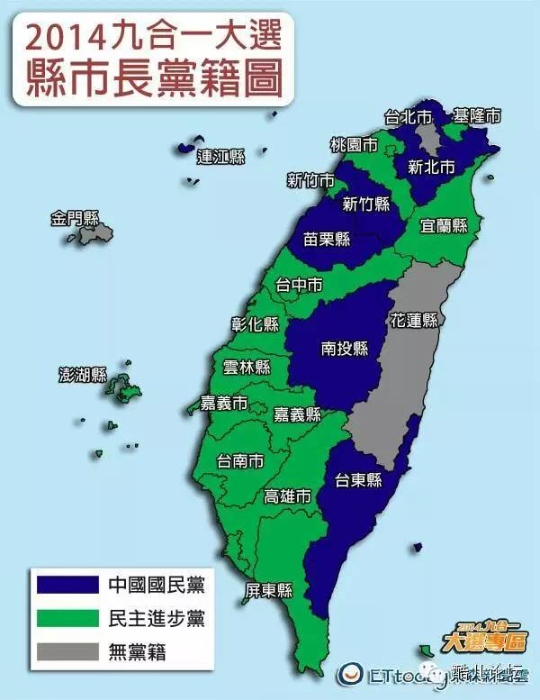

【观点汇编】彩虹旗下的台湾蓝绿风云
落子无悔 选编
都说同志们对政治没兴趣，那我们今天就来谈谈它。
台湾地方选举已经结束，国民党损失惨重。这次被称为“九合一”的台湾地方选举，是2016年台湾总统大选的前哨战，蓝绿两大阵营全力争夺，竞争激烈，在11月29号公布的最终的计票结果显示，国民党已经在“六都”市长选战中的五个城市败选，民进党则夺得其中四个城市的市长职位，最重要的台北市长一职也被倾向绿营的无党派候选人夺取。在22个县市长中，中国国民党获得6席，民进党获得13席，另有3席为无党籍。（Via FT）

本届选举是中国国民党主席马英九在2012年连任总统后的首场全国性选举，为台湾政治日后发展的关键指标，同时也具有2016年中央层级的总统选举／立法委员选举前哨战的重大意义。该届选举亦是台湾政治史上最大规模的地方选举，应选出的公职人员总数达11,130人。（Via Wiki）
年轻族群已经成为了左右民主国家选情的中坚力量，而下面的这篇文章则从活跃于年轻族群中的同志少数族群的角度解读了彩虹旗下的台湾政治蓝绿风云。
对于台湾很多政治人物而言，同性恋权益是道“必答题”，表态时必须小心应付。
10月25日，台北，彩虹旗又一次布满凯达格兰大道，今年的主题是“拥抱性别·认同差异”。
自2003年11月1日起，台湾“同志”游行已经举办了12届。十余年过去，该活动已成为东亚规模最大的“同志”游行。
以国际主流观点推算，台湾1800余万选民中，有近百万位“同志”，选票实力“诱人”。于是，近20年来，曾被视为禁忌的同性恋话题，渐渐可以公开在台湾社会甚至是政坛上讨论。
而台湾“同志”团体也并不忌讳显示自己的力量，不仅要求民意代表公开立场，政党领袖、县市市长、政务官也常被逼表态。以至于如何应对“同志”们的“逼供”，成为台湾很多政治人物的一门“必修课”。
政客“必答题”
连胜文最近又头疼了，因为“同志”团体。
“九合一”选举激战正酣，“同志”团体就同性恋权益问题逼台北市长候选人表态，结果冯光远将“婚姻平权”写入政见，获高度嘉许；柯文哲开始有疑虑，但经沟通后宣布支持同性婚姻，亦获“同志”团体肯定；而连胜文因对该话题保持沉默，遭炮轰成社会“恐同”的帮凶——台湾伴侣权益推动联盟给他打出的评分是-3。这一结果，让连胜文的民调又下降了少许。
对于台湾很多政治人物而言，同性恋权益是道“必答题”，表态时必须小心应付。而“同志”团体对选战的影响，不容小觑。
早在1998年的台北市长选举时，因感觉到同性恋选票筹码的分量，包括领先的马英九和陈水扁在内，几名候选人一起签了一个支持同性恋的通告。但是不久，陈水扁就被指责“欺骗选民”，因为他曾经答应参加作家许佑生的同性婚礼，但却临场缺席；许诺由台北市政府资助的同性恋圣诞舞会也泡汤。
选战结果是，表态保护“自由选择”、并承诺以市政预算补助“同志”公民运动的马英九获胜——虽然这笔预算最终没能通过市议会审批，但当时还是让台湾的“同志”团体非常振奋。
不过，与此相反的是，“保障同性恋平等权利”的同时，政客的“性取向”传闻，也是打击对手拉拢选票的手段。2005年县市长选举前，寻求连任的胡志强就被影射和马英九是同性恋；至于马英九和金溥聪的“断背”关系更是传得沸沸扬扬；而民进党主席蔡英文的性取向问题，近年来也常被炒作。
“征同性相知”
“社会在变化，每一个群体都为他们的权益而发声。这种形势鼓舞了我们。”在自己的婚礼上，许佑生曾如是说。
很难想象，台湾“同志”发声始于上世纪60年代，蒋家高压统治时期。以文字为载体，白先勇、林怀民等作家开台湾“同志书写”之先河。林怀民的中篇小说《安德烈·纪德的冬天》以较大的篇幅描写了一个大学生与一个舞蹈家之间的男同恋情，而白先勇的长篇小说《孽子》，则使他被称作“华文文学里的第一个‘同志’作家”。
不过，碍于社会压力，台湾同性恋者真正开始被平等对待，则是在1987年戒严令取消之后。
拜当时各种思想对台湾传统文化的冲击所赐，台湾的同性恋社群甚至有了西方同性恋活动家们梦想不到的优势：反同性恋的暴力、宗教对同性恋的排斥等并非主流。对待同性恋的态度方面，社会也没有出现西方那样的两极分化。
台湾有了同性恋热线、大学生互助组织、同性恋友好诊所、同性恋书店、同性恋杂志、同性恋酒吧……甚至有了能得到国际认可的同性恋题材电影——李安导演的《喜宴》。
不过，当时的台湾同性恋者，还很羞涩低调，找朋友的唯一途径是在一本电影杂志后页登几条征友广告，广告词也是闪烁其词，比如“征同性相知”。
1992年的潘美辰事件，让本还处于半地下状态的台湾“同志”团体，见识到了团结的力量。当年，“台视新闻报导”记者璩美凤以隐藏式摄影机偷窥女“同志”，并以不当方式采访歌手潘美辰，剪接影射其为同性恋。报道播出后，成立于1990年的台湾第一个同志团体“我们之间”，立即联合其他妇运团体及文化界人士发动联署抗议，最终迫使新闻主播张雅琴离职。
此事之后，“同志”团体在台湾各地方各层面大量出现，并且逐渐不再满足仅是得到经费资助、民间认同，而是期待通过“立法”手段，赋予台湾同性伴侣结婚的权利。
2003年之后，“人权保障基本法”、“同性婚姻法”草案进入“立法院”，但都因争议过大被搁置；近两年，“同志”团体则推动“多元成家”方案，试图规定婚姻不必局限于男女双方。
支持“同性婚姻”民进党最积极
事实上，婚姻平权议题在台湾早已不是新鲜事，台湾官方的“性别平等处”也认为同性婚姻合法化已是大势所趋——依照去年台湾媒体的民调，55%的台湾民众支持同性婚姻。
马英九也曾多次表示对同性婚姻应“尊重包容”，甚至被女“同志”邀请担任其“证婚人”。但是，“多元成家”方案还是太激进了，在岛内引发很大争议，若实施恐颠覆传统伦理。对此马英九只能含糊表态，这牵涉到社会基础的婚姻、家庭制度，需要更多对话、沟通与讨论。
或许是如此“保守”立场，让台湾“同志”团体颇为不满。“太阳花学运”期间，就有“同志”团体在“立法院”外宣传“婚姻平权”理念。活动发言人陈志明称，“太阳花学运”中的志愿者约有五分之一来自“同志”团体，目的就是向“立委”施压。
倒是绿营政客大多对这个法案乐观其成。蔡英文参与“同志”团体的联署活动，称“应让民众对不同形态的家庭，有更自由的选择权”，苏贞昌亦支持同性婚姻合法化，“希望创造理性讨论空间”。先后在“立法院”提出同性婚姻合法草案的“立委”，也以民进党籍的萧美琴与尤美女等人为主。而今年10月初，百余个“同志”团体包围“立法院”，督促“立委”支持婚姻平权，结果112名“立委”中仅有21人响应，其中15名为民进党人士。
不过，民进党的态度引发了反同性婚姻人士的不满，中央党部的抗议电话连续几天被打爆。绿营为拉拢“同志”，却可能流失更多的选票，这也许是他们事先没料到的。
尽管不少台湾人并不反对同性婚姻，“同志”团体也手握不少选票，但要承认的是，在选举中，“同志”选票起决定性作用还有点难度。1995年，庄松富角逐台北市区域“立委”，成为台湾选举史上首个同性恋候选人，但至今，有多位“同志”参加公职选举，无一当选。
竞选并不是一件容易的事。今年“九合一”选举台北市中山区大直里里长参选人陈敬学，拜票时曾遇到保全人员当他的面，将他的名片扔在地上，只因为他是“同志”。
而把“我是男同志！”直接写到宣传文宣上的台北市北投区清江里里长参选人李建裕，则被“热心”民众提醒，“事情可以做，但是不要这么招摇。”
(作者：白崭 via 看天下)
在此之前，11月4日美国中期选举的选举结果公布，继2010年奥巴马在第一个中期选举中输掉众议院的多数党地位之后，这次民主党又输掉了参议院。虽然在其执政期间美国经济逐渐向好，失业率屡创金融危机以来新低，但年轻族群在中期选举中的低投票率无疑让其失去了一大部分票源。一般而言，四年一次的总统选举有60%的投票率，地方性的中期选举，投票率仅40%。投票族群也略有不同，总统选举更多是年轻人、多元族群、自由派、民主党人士；中期选举时，保守、年长、白人的共和党选民投票意愿较强。而两党在同性恋婚姻议题上有着截然不同的主张——奥巴马在2012年5月9日成为第一位公开支持同性婚姻合法化的美国总统；而共和党则对同性婚姻持反对态度，拥护男人和女人形成的“传统婚姻”以及维系美国的“家庭核心价值。”
那么问题来了……
LGBT社群真的在台湾和美国政治生态中占有了一席之地，从而对今年美国的中期选举和台湾九合一选举产生了影响吗？
这会是社会的进步还是政治集团权力游戏中的筹码？
对于美国和台湾2016年的大选有什么见解和预测？
同性婚姻距离我们还有多远，你会为此移居国外吗？
除了选举区县级人大代表，你对政治的关心和参与又还有多少？
欢迎点击“阅读原文”到原帖下畅所欲言！